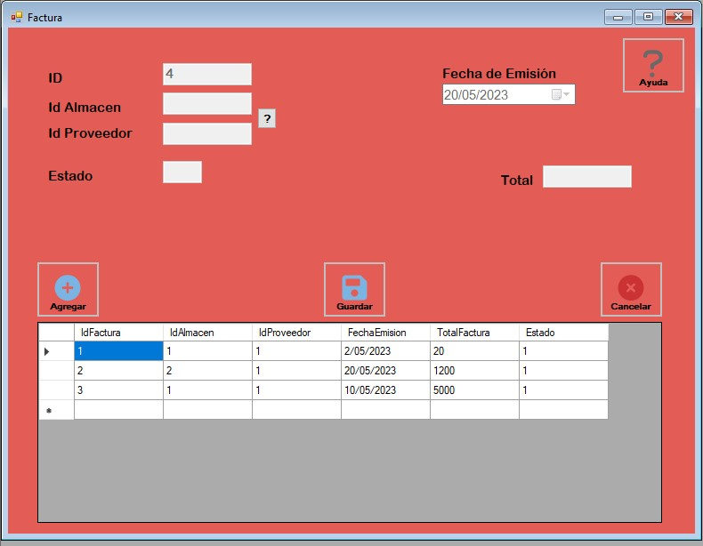
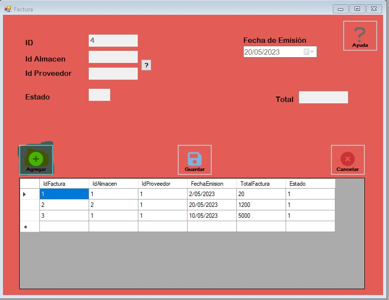
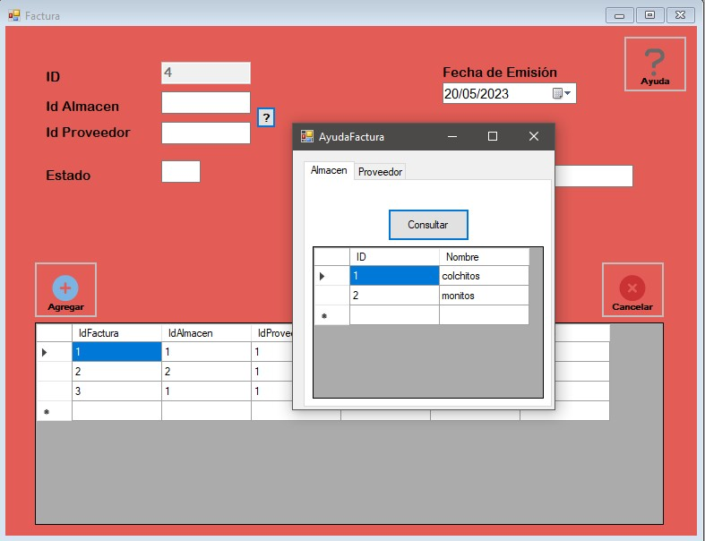
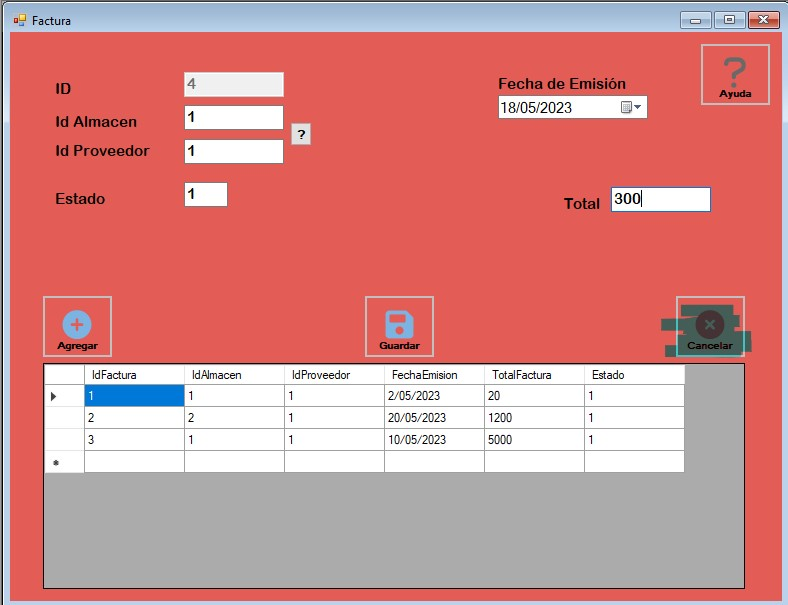
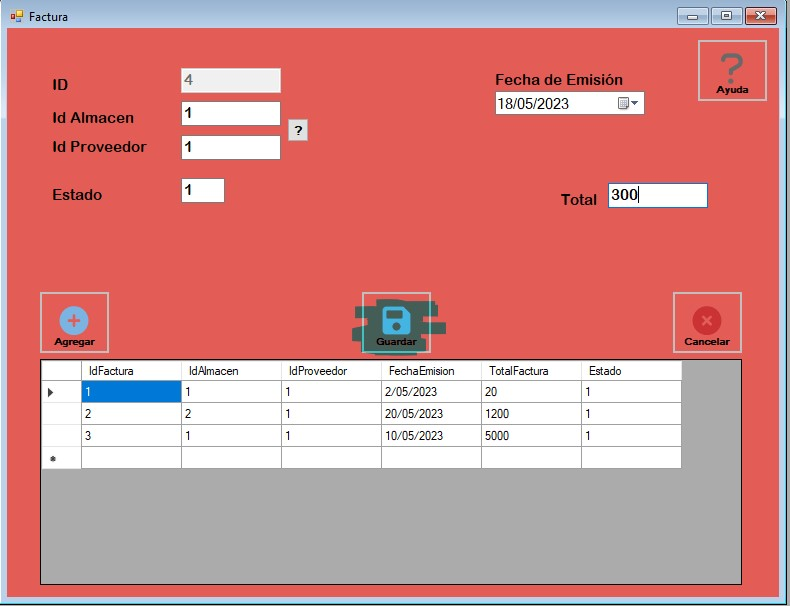

Proceso Agregar factura
El proceso de agregar factura tiene como objetivo agregar factura al sistema de cuentas por pagar.
Agregar
Para realizar una nueva inserción de datos seleccionamos el boton "agregar".
Cuando presionamos el boton de agregar se habilitaran los textbox para poder agregar los datos.
Para saber cual es el Id de Almacen y de Proveedor, debemos presionar el boton con el signo (?) y se nos despliegara un formulario donde presionamos el boton consultar y obtendremos los datos necesarios.

Cancelar
Si queremos cancelar la inserción de los datos de una nueva factura presionamos el boton llamado "Cancelar", este boton borrará todos los datos que se ingresaron en los textbox, esta función solo servirá si aun no hemos guardado los datos a la base de datos.
Guardar
Cuando se haya rellenado toda la información que solicita el formulario de factura, se presiona el boton llamado "Guardar" para guardar la información en la base de datos.
